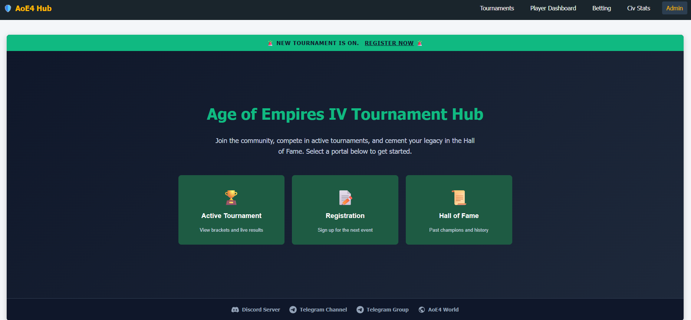

Age of Empires IV Tournament Platform
A responsive web dashboard and Telegram bot system built to manage player sign-ups, track matches, and log betting for gaming tournaments.
HTML/CSS/JS
Telegram Webhooks
Apps Script